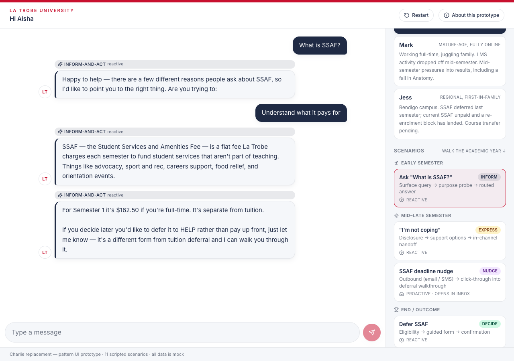

Lean Charlie — MVP roadmap
A deliberately narrow launch that ships the thesis — purpose-routing + transactional actions — on a single MCP server, a single action, vector retrieval, and no curated MEMORY. Every cut is reversible at the seam. Complexity returns when data demands it, not on speculation.
1. Premise
Charlie's value is the thesis — classify intent before retrieval, route to a typed pattern handler, act transactionally where the conversation needs it. Everything else (number of MCP servers, breadth of retrieval, depth of state, count of providers) is dial-able. Lean Charlie turns each dial to its lowest defensible setting, ships, and re-dials based on production evidence rather than launch-day ambition.
What we ship
The pattern classifier, four reactive patterns, one transactional action of LTU's choosing from the five SAP PO flows, vector retrieval over the corpus, Anthropic Claude as the default, and email-based wellbeing escalation.
What we defer (reversibly)
Three MCP servers → one. Hybrid retrieval + reranker → vector-only. Five SAP PO actions → one. Four state slices → two. Pre-building extra provider backends → ship with Anthropic, configure others via the LLMClient interface (T15) as needed. Held-composer Express UX → email escalation.
2. The MVP shape
Concentric scope. The emerald core is what ships at launch. The amber ring is hardening that follows once the core proves out. The coral ring is follow-up-release ambition.
3. What's in / what's deferred
One row per dial. The "deferred" column is reversible at the same seam, not a different design.
| Dial | MVP setting launch | Deferred setting later | Seam |
|---|---|---|---|
| MCP servers | 1 server with records.* · actions.* · wellbeing.* namespaces | 3 independent servers (records / actions / wellbeing) | MCP transport unchanged — split when a second team owns one |
| LLM provider | Configurable via the LLMClient interface (T15) — Anthropic Claude is the default at launch | Additional providers wired in as needed (e.g. Azure OpenAI AU East for residency, Bedrock for sovereign hosting, Gemini / Mistral / GLM / local Ollama-vLLM). Per-task assignment in models.config.ts (T16). | The LLMClient interface is in place from day one — adding a provider is config, not orchestrator code |
| Retrieval | Dense vector only on pgvector | + BM25 hybrid + BGE reranker (Qdrant if needed) | Retrieval pipeline is in-process — swap the pipeline, not the orchestrator |
| SAP PO actions | 1 action — LTU's selection from the five flows (defer · withdraw · transfer · change-load · special-consideration). Selection criterion: highest impact × readiness — most value on the seam where SAP PO + audit + schema can be proven cleanly. | The remaining four actions, added one at a time | Function-call schema + audit chain proven by the first action; the rest follow the same shape regardless of which is chosen |
| State slices | USER + session log | + MEMORY (curated facts) + per-student token budget | Per-turn state loader interface — add slices without changing call sites |
| Express UX | Email escalation to advisor | Held-composer + in-channel advisor handoff | Same Express prompt + distress detector; only the post-detect surface changes |
| Ingestion stack | Minimal HTML scrape + chunk + embed | Docling + LlamaIndex pipeline | Job runs separately from the orchestrator — swap when content variety demands it |
| Proactive patterns | Not in scope | Nudge + Check-in via ltu-outbound-mcp | Already deferred to the follow-up release in current design — Lean doesn't move this |
| Mobile | Responsive web only | Capacitor Android wrap | Already T13 / follow-up release — Lean doesn't move this either |
4. Build sequence — dependency-ordered, not date-ordered
Per X6 ("time is irrelevant with AI"), the roadmap sequences by dependency and outcome, not calendar. Each milestone unlocks the next; nothing waits on a week-number.
5. Reactivation triggers
A deferred feature isn't a "no" — it's a "not yet, here's the signal that flips it." Documented so the team doesn't drift back into building speculatively.
| # | Deferred feature | Reactivate when… | Where it goes |
|---|---|---|---|
| R1 | Split MCP into 3 servers | A second team owns one of records / actions / wellbeing, or any one tool exceeds 10 RPS sustained. | Same Container Apps env · revive T19 design exactly |
| R2 | + BM25 + BGE reranker | Retrieval eval shows >15% of corpus questions missing exact policy-name matches, or top-1 quality is below acceptance threshold. | Swap retrieval pipeline (in-process); Qdrant if pgvector hits scale |
| R3 | + MEMORY (curated facts) | Conversation logs show repeat context loss across sessions for the same student (e.g. course/year re-asked). | Add MEMORY slice to per-turn state loader |
| R4 | + Per-student token budget | Global cap is being hit, or per-student abuse pattern detected. | Budget counter at orchestrator middleware |
| R5 | + Remaining SAP PO actions (the four not chosen for MVP) | The first action has been in production ≥4 weeks without SAP PO incidents; intake volume or stakeholder priority justifies the next action. | New tool in actions.* namespace · same schema shape · added one at a time |
| R6 | Configure an additional LLM provider | Residency review requires it (e.g. Azure OpenAI AU East / Bedrock Sydney), Anthropic quota or availability becomes a risk, or a per-task cost optimisation is identified (e.g. cheaper model for classification). | New LLMClient implementation behind the existing interface · per-task assignment in models.config.ts (T16) · no orchestrator change |
| R7 | Held-composer Express UX | Email escalation produces measurable friction (advisor pickup latency, student drop-off), or wellbeing team requests in-channel hold as a duty-of-care upgrade. | Frontend Express surface · same distress detector + Express prompt |
| R8 | Docling + LlamaIndex ingestion | Content variety grows past portal HTML (PDFs, Word, mixed structure), or ingestion job quality degrades on the existing corpus. | Swap ingestion job · no orchestrator change |
6. Risks and mitigations
| Risk manage | Likelihood | Mitigation |
|---|---|---|
| Vector-only retrieval misses exact policy-name queries | Medium | Ship retrieval eval harness in Foundation lane; R2 ready to fire on first signal |
| Single Decide action feels narrow in stakeholder demos | Medium | Frame as the thesis-proving action — the goal is to prove the function-call + SAP PO + audit seam end-to-end on one transaction. Pair with a volume / impact figure for the chosen action (e.g. SSAF deferral targets ~7,648 sanctions; withdrawal volumes are similarly material) so the demo lands on value, not breadth. |
| Email escalation creates pickup-latency vs in-channel hold | Medium-High | Measure advisor pickup time from week one; R7 fires if it exceeds threshold |
| Single MCP server becomes a multi-team contention point | Low at launch | R1 trigger; namespaces are pre-split so the move is mechanical |
| Stakeholder reads "lean" as "scope reduction" rather than "deferral on a seam" | High | Use the soundbite below; lead with Figure 1 and the reactivation table |
| "Lean Charlie" gets locked in as the permanent shape | Medium | Triggers in §5 are explicit; review at 30 / 60 / 90 days post-launch |
7. Solution at launch — application & infrastructure
Two views of the same lean cut. The application view shows the runtime components the orchestrator runs end-to-end; the infrastructure view shows where they live on Azure and what crosses the tenant boundary. Coral-dashed callouts mark the seams where deferred features dock when their reactivation triggers fire — no re-platforming.
7.1 Application solution
7.2 Infrastructure solution
8. Stakeholder soundbite
We're shipping the thesis — purpose-routing + transactional actions — on a deliberately narrow launch: one tool server, one action, vector retrieval, no curated MEMORY. Every cut is reversible at the seam. Complexity returns when data tells us we need it, not on speculation.
Pair this line with Figure 1 (scope rings) for senior stakeholders and Figure 2 (build sequence) for engineering reviewers. Both answer the question "what did you defer and why" without re-litigating the architecture.
A. Appendix — the thesis in one screenshot
A scripted scenario from the workshop prototype: Aisha asks "What is SSAF?" and the assistant probes purpose before delivering content. This is the behavioural shift Lean Charlie ships at launch — purpose-routing over FAQ-matching — and the single move that everything else in this roadmap supports.

A second scenario shows the same model handling a harder shape — distress disclosure paired with academic fallout — on a different persona. Mark, mature-age and fully online, opens with "I just failed Anatomy". The assistant acknowledges the human side first, asks how he's actually doing, then routes to academic options once he signals he's okay to talk practicals. One pattern (Express), two concerns (wellbeing + academic), handled in-channel.
![Mark says 'I just failed Anatomy'. The assistant acknowledges the difficulty, asks how he's doing, and offers three lanes (okay-but-frustrated, hitting harder, just want options). Mark picks 'I'm okay — just frustrated'; the assistant then walks through three concrete academic paths — supplementary assessment, special consideration, repeat the subject — and asks if he wants to start any now or sit with it. Mark picks 'Hold off for tonight'; the assistant closes with a calm 'sleep on it, deadlines aren't for another two weeks, I'll still be here'.](screenshots/08-mark-express-failed-anatomy.png)
The full set of scripted scenarios (Aisha · Mark · Jess across early / mid–late / end-outcome lifecycle stages) lives in prototype/docs/screenshots/ — one image per scenario, captured deterministically from the workshop prototype. The companion brief in Charlie_Prototype_Brief_v4.md describes the coverage matrix: eleven scenarios across the six patterns, no two scenarios sharing the same combination of persona, lifecycle, and pattern shape.